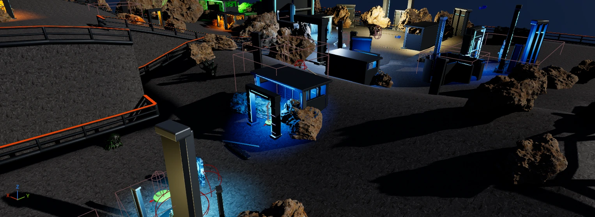
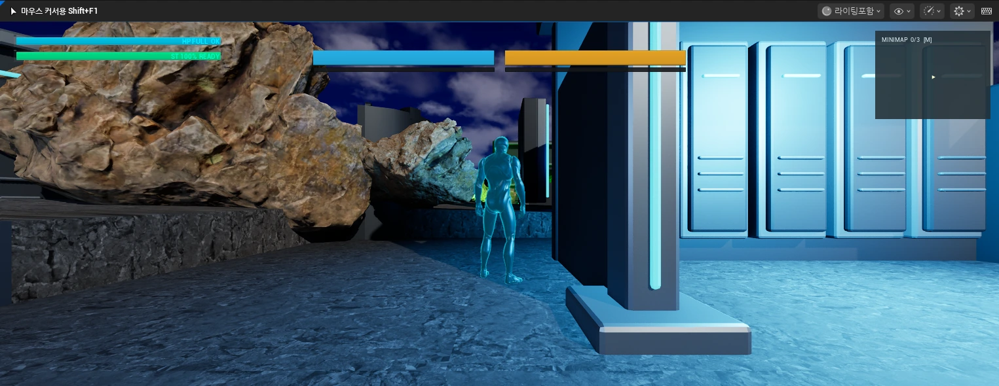
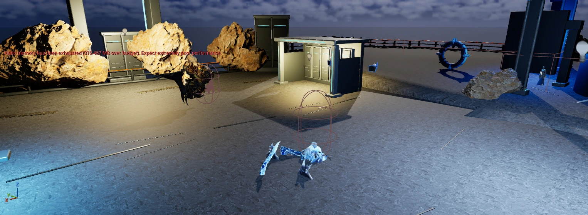
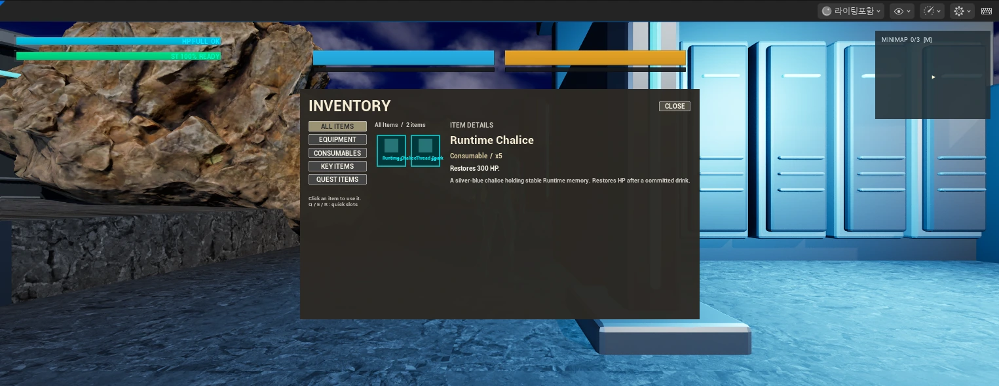
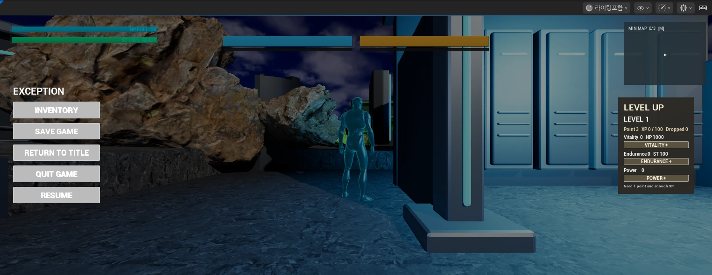

GAME DEVELOPMENT PORTFOLIO2026 · 박재영
GAME DEVELOPER
박재영.
직접 플레이하며 문제를 찾고,
코드로 해결하는 게임 개발자입니다.
C++을 중심으로 Unreal Engine과 Unity를 사용해 게임을 개발합니다. 입력과 전투 판정, 보스 상태, UI 반응처럼 플레이어가 직접 느끼는 기능을 구현해 왔습니다.
ABOUT ME
플레이어 가까이에서
공격과 회피, 충돌 판정, HUD처럼 조작과 피드백이 만나는 게임플레이 시스템에 관심이 있습니다.
함께 문제를 해결하며
CodeUs 동아리 부장과 6인 팀의 메인 프로그래머를 맡아, 팀원의 오류를 함께 재현하고 기능을 연결했습니다.
2024.03 ~ 현재미림마이스터고
뉴미디어소프트웨어과
- ENGINE
- Unreal Engine · Unity
- 전투 상태 · 보스 패턴 · 이벤트 기반 HUD
- LANGUAGE
- C++ · C# · Python
- 게임플레이 구현 · 렌더링 · 입력 판정
- TOOLS
- Git · GitHub · Visual Studio
- VS Code · Blender
01 / FEATURED PROJECTEXCEPTION · 01 / 04
개인 프로젝트 · 기획 / 프로그래밍
Exception.
손상된 Runtime을 탐험하고,
오류에서 태어난 보스에 맞서는
다크 SF 판타지 액션 RPG

WORLD / L_Runtime_Field필드 구조물과 탐험 동선 · 에디터 뷰포트
- 개발 기간
- 2026.06 ~ 진행 중
- 개발 환경
- Unreal Engine 5.8 · C++ · Blueprint
- 담당 범위
- 플레이어 전투, 보스, HUD, 저장·로드
한 번의 도전을 완성하는 시스템
Hendel은 회피와 패링으로 공격 기회를 만들고, Groggy를 쌓아 보스를 처형합니다. 전투부터 체크포인트 복귀까지 연결되는 플레이 흐름을 구현했습니다.
C++로 게임 규칙과 데이터를 관리하고, Blueprint로 UI 배치와 애니메이션·연출을 연결합니다.
01 / EXCEPTIONCOMBAT SYSTEM · 02 / 04
01 / HIT DETECTION범위 판정 + 중복 피격 방지
캐릭터 전방을 Sphere Sweep으로 검사합니다. 적중 대상은 공격별 TSet에 기록하고, 같은 공격에서 이미 처리한 대상은 건너뜁니다.
02 / ACTION STATE공격·회피·패링의 상태 관리
약공격과 강공격, 회피, 패링, 피격을 전투 상태로 구분합니다. 공격 시작 시 적중 이력을 초기화하고, 히트 윈도우에 맞춰 판정을 처리합니다.
설계 의도 판정 범위와 공격 타이밍을 조정하면서도, 한 공격에서 중복 데미지가 발생하지 않도록 했습니다.

IN GAME / PLAYER현재 캐릭터와 플레이어 HUD · PIE 캡처
공격 시작적중 이력 초기화→Sphere Sweep범위 내 대상 검사→TSet 확인미적중 대상만 처리
PlayerFight.cpp 중복 판정 방지 · 발췌
if (!HitActor ||
DamagedActorsThisAttack.Contains(HitActorPtr))
{
continue;
}
C++ · Collision Query · Combat State전투 코드 ↗
01 / EXCEPTIONBOSS ENCOUNTER · 03 / 04
보스 시스템보스의 상태와, 둘이 공격하는 순서를 나눠 관리합니다.

PYTHON / DUAL BOSSVethara · Aurathos의 외형과 아레나 배치 · 에디터 뷰포트
01 / SHARED STATE공통 보스 베이스
HP, Groggy, 페이즈, 사망과 처형 상태를 공통 베이스에서 처리합니다. 보스별 패턴을 추가해도 상태 처리 규칙을 공유할 수 있게 했습니다.
02 / TEAM COORDINATION다중 보스 공격 조율
TeamCoordinator가 현재 공격자와 공격 간격을 관리합니다. 동시 공격을 제한할 때는 다른 보스의 공격이 끝난 뒤 다음 공격을 허용합니다.
03 / EXECUTIONGroggy에서 처형까지
Groggy 누적으로 처형 기회를 열고, 제한 시간 후 회복하도록 구성했습니다. 보스 상태의 변화가 HUD와 처형 가능 표시에 연결됩니다.
전투 / 페이즈→Groggy 누적→처형 기회→처형 또는 시간 후 회복
공통 상태: BRBossBase · 팀 조율: BRBossTeamCoordinator보스 조율 코드 ↗
01 / EXCEPTIONUI & PERSISTENCE · 04 / 04
HUD · 인벤토리 · 저장상태 변화는 화면으로, 플레이 기록은 다음 도전으로.

INVENTORY카테고리 · 슬롯 목록 · 아이템 상세

PAUSE / PROGRESSION저장 메뉴와 경험치·레벨업 패널
01 / EVENT-DRIVEN HUD수치 변경을 이벤트로 전달
HP, Stamina, Groggy 변경을 Delegate로 전달합니다. 전투 시스템이 수치를 관리하고, HUD는 전달받은 값을 표시합니다.
02 / INVENTORY데이터와 표시의 분리
슬롯 데이터는 인벤토리 컴포넌트가 관리합니다. 아이템 추가·사용·이동에 따른 변경 이벤트를 UI에 전달하고, 슬롯 데이터를 저장 파일에 포함합니다.
03 / SAVE & RESTORE체크포인트에서 다시 시작
SaveGameSubsystem으로 위치, 능력치, 인벤토리를 저장·복원합니다. 체크포인트 자동 저장, 메뉴 수동 저장, Continue 로드를 연결했습니다.
게임 데이터→Delegate→HUD
프로젝트 개요 · PyMax
리듬 게임
PyMax
노트 데이터와 입력 시간을 직접 다루는 4키 리듬 게임
- 기간
- 2025.06
- 인원
- 개인 프로젝트
- 역할
- 프로그래밍
- 기술
- Python · Pygame
 4키 입력, 판정선, 점수와 피버 게이지
4키 입력, 판정선, 점수와 피버 게이지
프로젝트 설명
곡을 고르면 노트 파일을 읽어 화면에 배치하고, Q·W·O·P 입력 시점에 따라 판정을 계산합니다. 곡 선택부터 결과 확인까지 한 프로그램으로 만들었습니다.
구현한 기능
- 텍스트 기반 노트 데이터 로드
- 4키 입력과 타이밍 판정
- 콤보, 점수와 피버 게이지 계산
- 곡 선택, 플레이와 결과 화면
기술 상세 · PyMax
문제와 해결
음악과 노트가 같은 시간을 보도록 수정했습니다.
음악과 판정 시점의 오차
문제 화면 프레임에 기대어 시간을 계산하면 처리 속도에 따라 음악과 노트 위치가 어긋났습니다.
해결 곡이 시작된 시각을 저장하고, 현재 시스템 시간과의 차이를 노트 위치와 입력 판정에 사용했습니다.
결과 음악 재생과 입력 판정이 같은 시간 기준을 사용하게 됐습니다.
 곡 선택 화면
리듬 게임 플레이
곡 선택 화면
리듬 게임 플레이
프로젝트 개요 · SpaceOut
DirectX 슈팅
SpaceOut
외부 게임 엔진 없이 만든 2D 슈팅 게임
- 기간
- 2025.12
- 인원
- 개인 프로젝트
- 역할
- 프로그래밍
- 기술
- C++ · DirectX 11 · HLSL
 플레이어, 적과 투사체가 동작하는 화면
플레이어, 적과 투사체가 동작하는 화면
프로젝트 설명
적의 투사체를 피하며 반격하는 슈팅 게임입니다. DirectX 11로 화면을 그리고 이동, 투사체 갱신, 충돌과 점수 계산을 게임 루프에서 처리했습니다.
구현한 기능
- DirectX 11 렌더링과 스프라이트 출력
- 플레이어 이동과 적 패턴
- 탄환 갱신과 AABB 충돌 판정
- 타이틀, 플레이와 점수 화면
기술 상세 · SpaceOut
문제와 해결
반복되는 탄환 생성과 충돌 처리를 정리했습니다.
투사체 관리
문제 투사체가 늘어날수록 객체 생성과 충돌 검사를 반복해야 했습니다.
해결 충돌은 AABB 범위로 검사하고, 탄환은 미리 만든 목록에서 사용 여부를 바꿔 재사용하도록 작성했습니다.
결과 렌더링부터 게임 규칙까지 엔진이 처리하던 단계를 직접 코드로 다뤘습니다.
 타이틀과 최고 점수 화면
슈팅 게임 플레이
타이틀과 최고 점수 화면
슈팅 게임 플레이
프로젝트 개요 · Magic Girl Kawaii Lovelies
팀 프로젝트
Magic Girl Kawaii Lovelies
음성 명령으로 보스 패턴을 푸는 게임
- 기간
- 2025.12
- 인원
- 6인 팀
- 역할
- 메인 프로그래머
- 기술
- C++ · JavaScript · Voice API
 캐릭터 대화와 음성 입력을 결합한 화면
캐릭터 대화와 음성 입력을 결합한 화면
프로젝트 설명
보스 패턴을 피하다가 정해진 상황에 음성 명령을 사용해 전투를 바꾸는 팀 프로젝트입니다. 메인 프로그래머로 전투 코드와 음성 응답 처리를 맡았습니다.
담당한 기능
- 보스 상태와 공격 패턴
- 피격 판정과 그로기 처리
- 음성 서버 응답을 전투 이벤트로 변환
- 공용 로직과 브랜치 작업 범위 정리
기술 상세 · Magic Girl Kawaii Lovelies
문제와 해결
서버 응답과 보스 판정 시점을 맞췄습니다.
음성 입력 지연
문제 음성 인식 결과가 늦게 도착하면 보스의 판정 시점과 어긋났습니다.
해결 보스 상태에 음성 입력을 기다리는 구간을 두고, 도착한 결과를 다음 처리 시점에 읽도록 나눴습니다.
결과 음성 입력, 보스 상태와 화면 반응이 같은 전투 규칙 안에서 작동하게 했습니다.
 팀 프로젝트 타이틀
음성 입력 전투 화면
팀 프로젝트 타이틀
음성 입력 전투 화면